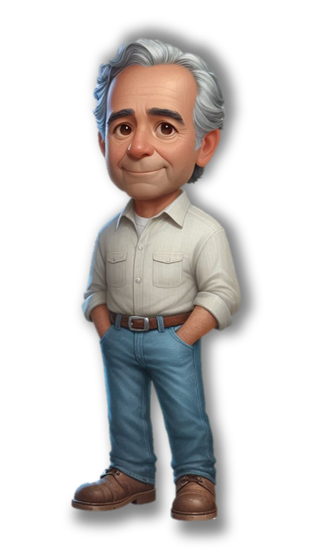

O Legado do
Sr. Geraldo
Há mais de meio século, o Sr. Geraldo dedica-se com paixão à Duralge Autoelétrica, uma empresa que se tornou sinônimo de excelência em baterias e serviços elétricos automotivos em Teófilo Otoni. Sua jornada é marcada por dedicação, conhecimento profundo e um compromisso inabalável com a comunidade local.
